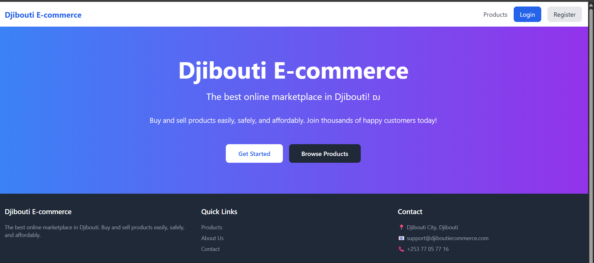

Why NGOs Need Digital Systems
Non‑profits can multiply their impact with the right tools — but most still rely on paper and spreadsheets. Here’s why going digital is no longer optional.
Read More
The problem with paper
Many NGOs in Djibouti and across the Horn of Africa still track beneficiaries, donations, and projects manually. This slows reporting, increases errors, and makes it nearly impossible to share real‑time data with donors.
What a digital system offers
A custom platform — even a simple one — can centralise all data. Donors can view live project dashboards, volunteers can log hours via a mobile interface, and field officers can update records instantly.
The real impact
When I built the Base Central CRCS dashboard for the Djibouti Red Crescent Society, reporting time dropped by 70%. That meant more time helping people and less time stuck in Excel.
Digital systems aren’t a luxury — they’re a force multiplier for organisations with a mission. If your NGO is still hesitating, now is the time to start.